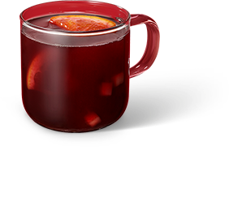
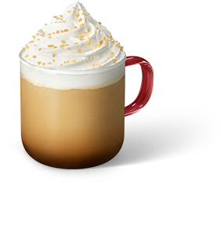
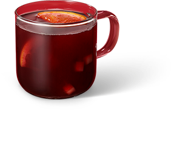
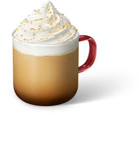
최상의 커피를 즐기는 법
- 커피 프레스
-
커피 프레스
커피 프레스는 물에 침지 된 원두의 맛과 향이 충분히 추출되어, 원두 본연의 풍미와 커피의 오일리함을 풍성하게 느낄 수 있습니다.
- 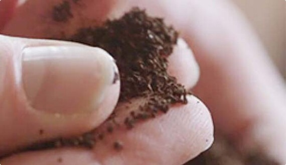 그라인딩 및 계량하기 바다 소금 크기로 굵게 그라인딩 된 커피를 프레스에 넣고, 물 6온스 당 커피 2테이블 스푼을 계랑해서 넣어주세요.
- 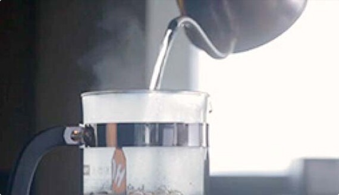 뜨거운 물 더하기 갓 끓인 뜨거운 물을 프레스에 채워주세요. 그라인딩 된 커피를 모두 적셔주세요.
- 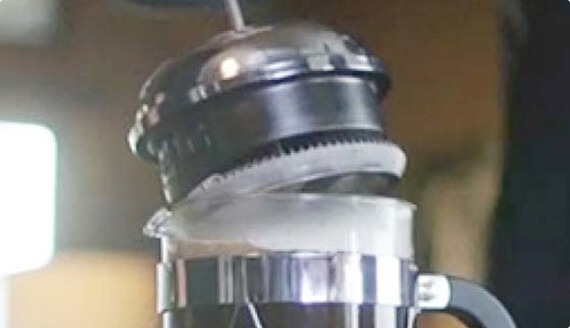 플런저(plunger) 올리고 커피 추출하기 플런저를 프레스 위에 올려놓고 4분간 커피를 추출하세요. 이때 플런저를 아래로 누르지 마세요.
- 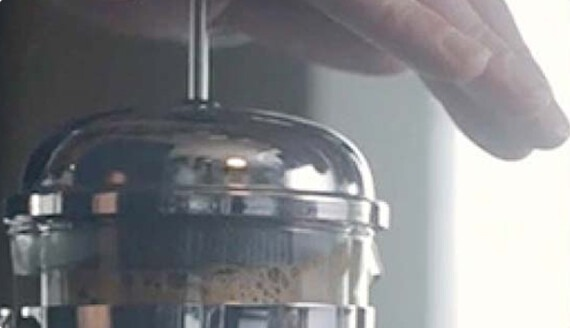 플런저로 누르기 플런저가 프레스 바닥에 닿을 때까지 천천히 아래로 눌러주세요. 그리고 커피를 즐기면 됩니다.
- 푸어 오버
-
푸어 오버
푸어 오버로 추출한 드립 커피는 부드럽고 깨끗한 풍미, 은은한 매력을 느낄 수 있고, 물을 멈추지 않고 부어 누구나 쉽고 간편하게 만들 수 있습니다.
- 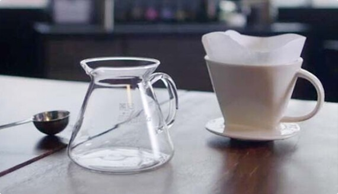 물 계량 및 끓이기 커피를 추출하기 위한 물을 원하는 만큼 계량하여 끓여 주세요. 필터를 린싱할 물도 조금 추가해 주세요.
- 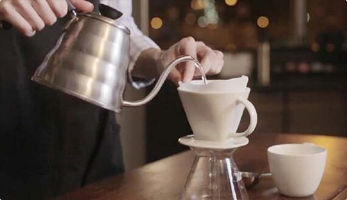 필터 린싱 & 예열하기 필터를 접어 드리퍼 안에 넣습니다. 소량의 뜨거운 물로 필터를 적시며, 드리퍼와 함께 예열합니다.
-
 계량 및 그라인딩하기
원하는 만큼 커피를 계량합니다. 종이로 된 필터에 그라인딩 된 커피를 넣으세요.
설탕 알갱이 크기의 비교적 곱게 그라인딩 된 커피를 사용합니다.
물 6온스 당 커피 2테이블 스푼을 계량하세요.
계량 및 그라인딩하기
원하는 만큼 커피를 계량합니다. 종이로 된 필터에 그라인딩 된 커피를 넣으세요.
설탕 알갱이 크기의 비교적 곱게 그라인딩 된 커피를 사용합니다.
물 6온스 당 커피 2테이블 스푼을 계량하세요.
- 뜸 들이기 먼저 뜨거운 물 소량을 그라인딩 된 커피가 살짝 젖을 정도로 붓습니다. 커피의 풍미가 잘 드러날 수 있도록 10초 정도 기다립니다.
- 물 마저 붓고 커피 즐기기 남은 물을 천천히 부어주세요. 그라인딩 된 커피가 전부 젖을 수 있도록 조그만 원을 그리듯 규칙적으로 물을 붓습니다. 그리고 커피를 즐깁니다.
- 아이스 푸어 오버
-
아이스 푸어 오버
부드럽고 깨끗한 풍미의 푸어 오버 드립 커피를 아이스커피로 산뜻하게 마실 수 있는 간단한 방법입니다.
- 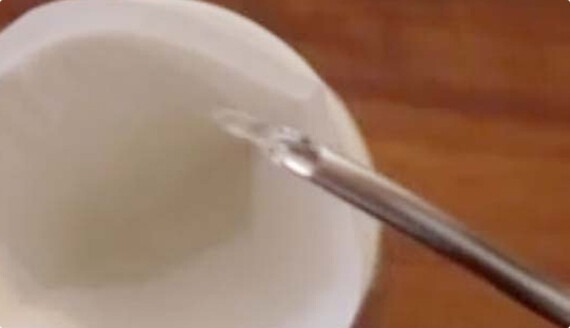 필터 린싱 & 예열하기 필터를 접어 드리퍼 안에 넣고, 소량의 뜨거운 물로 필터를 적십니다.
- 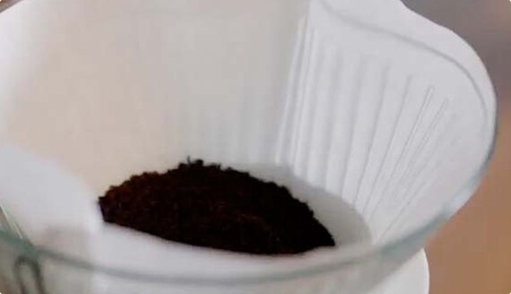 적합하게 그라인딩 된 커피 찾기 종이 필터에 그라인딩 된 커피를 넣으세요. 설탕 알갱이 크기의 비교적 곱게 그라인딩 된 커피를 사용합니다.
- 계량하기 아이스 푸어 오버는 두 배로 진하게 만든 후 얼음을 넣어 희석시킵니다. 뜨거운 물 6온스 당 커피 4테이블 스푼을 계랑하세요.
- 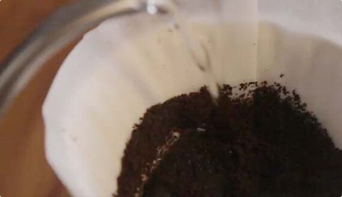 물 붓고 기다리기 먼저 뜨거운 물 소량을 그라인딩 된 커피가 살짝 젖을 정도로 붓고, 커피의 풍미가 잘 드러날 수 있도록 10초 정도 기다립니다. 커피가 물과 골고루 섞이면서 풍미가 나타나기 시작합니다.
- 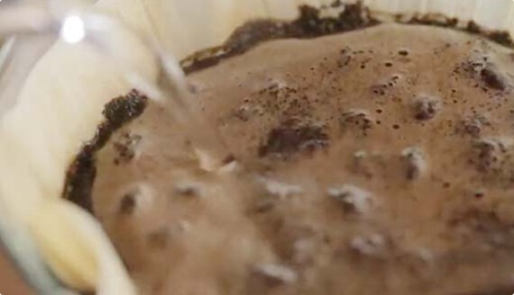 물 마저 붓고 커피 즐기기 남은 물을 천천히 부어주세요. 그라인딩 된 커피가 전부 젖을 수 있도록 조그만 원을 그리듯 규칙적으로 물을 붓습니다.
- 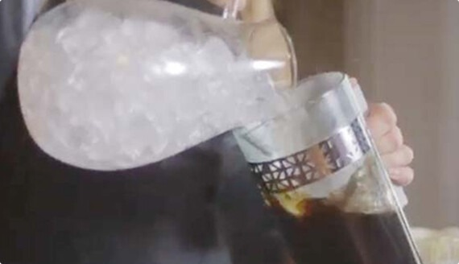 얼음 더하기 만들어진 커피에 얼음을 넣어 더 차갑고 시원하게 즐기세요.
- 커피 메이커
-
커피 메이커
드립 커피는 맛있는 커피를 간편하게 만드는 방법입니다. 커피 브루어에 적당히 그라인딩 된 커피와 깨끗한 물을 이용해서 완벽한 커피를 만들 수 있습니다.
- 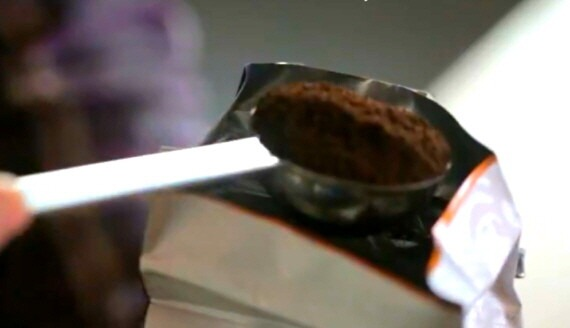 취향에 맞는 커피 찾기 바닥이 평평한 필터의 경우, 바다 소금 정도의 중간 크기로 그라인딩 된 커피를 사용하세요. 콘 형태 필터의 경우, 설탕 알갱이 크기의 곱게 그라인딩 된 커피를 사용하세요.
- 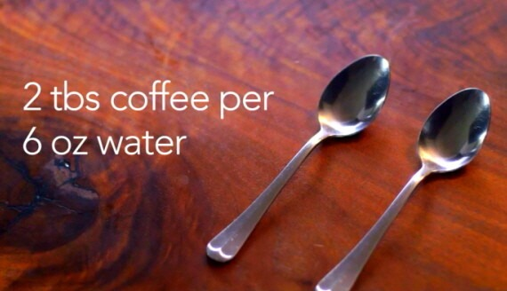 계량하기 물 6온스 당 신선하게 그라인딩 된 커피 2테이블 스푼을 계랑하세요.
- 커피 만들어 즐기기